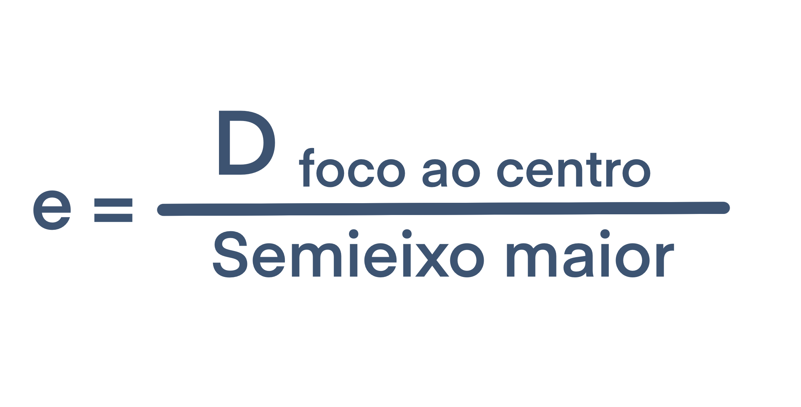
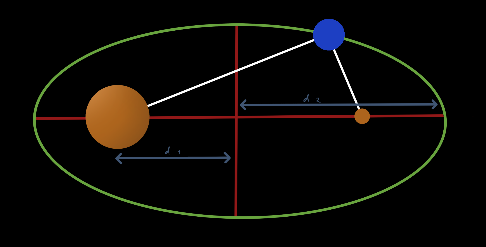
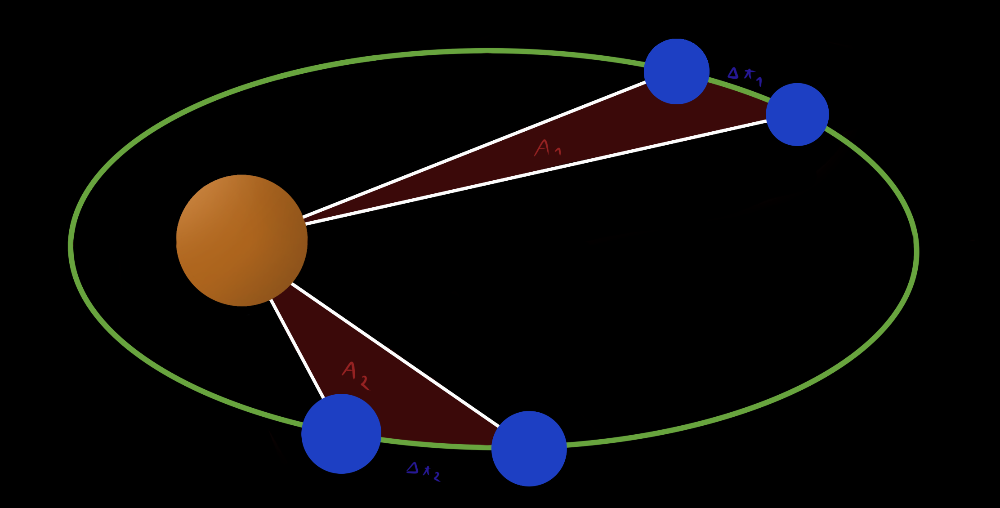
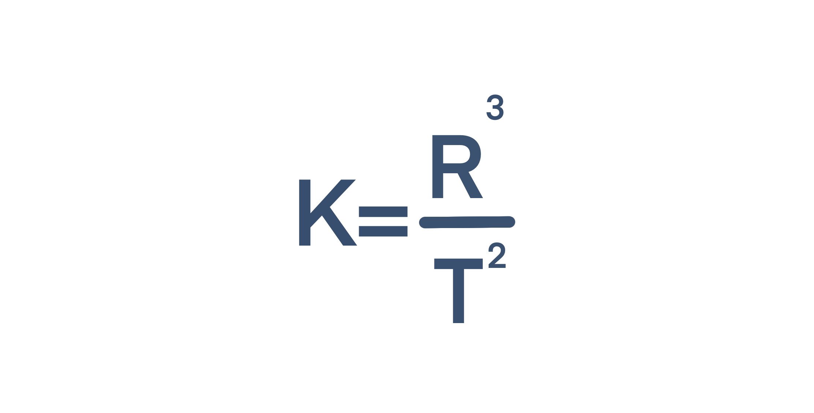

Olá a todos!
Visto que tenho este website, gosto de escrever e preciso de estudar física, decidi começar a fazer resumos e partilhar os mesmos por aqui.
Como primeiro Resumo vamos falar sobre as Leis de Kepler.
Kepler e o Heliocentrismo
Até alguns séculos atrás, era tido como verdade que a Terra era o centro do universo e que todos os planetas, estrelas... que podíamos ver no céu noturno giravam à sua volta em diversas esferas celestes. Esta teoria foi popularizada por Ptolomeu e era chamada de Geocentrismo.
Durante o Século XVI, através das observações de Galileu, Copérnico formulou uma nova teoria, a teoria Heliocêntrica, onde a Terra (assim como os restantes planetas) teriam órbitas em torno do Sol.
Esta teoria seria confirmada por Kepler, pois as suas previsões, chamadas de Leis de Kepler eram eficazes.

Primeira Lei
Na antiguidade a geometria era vista como uma prova da perfeição divina, e por isso as órbitas eram consideradas circulares. Kepler descobriu que isto não estava certo e que na realidade as órbitas planetárias são elípticas.
Uma elipse possui uma característica chamada excentricidade, sendo que um círculo tem uma excentricidade nula, e a mesma pode ser calculada por:

Após descobrir que os planetas do nosso sistema solar descreviam órbitas elípticas de baixa excentricidade, Kepler postulou o seguinte:
Lei das Órbitas: Os planetas descrevem órbitas elípticas em torno do sol, sendo que este ocupa um dos focos.

Segunda Lei
Apesar de a Conservação do momento ainda não ser conhecida na altura em que Kepler propôs a sua segunda lei, esta é uma consequência da conservação do momento, fazendo com que um planeta aumente a sua velocidade quando se aproxima do sol e a diminua quando se afasta.
Dada esta mudança de velocidade Kepler deduziu que:
Lei das Áreas: O vetor posição de um planeta em relação ao Sol precorre Áreas iguais em Intervalos de Tempo iguais.

Terceira Lei
Kepler descobriu ainda que o período de cada planeta (ano/tempo que demora a dar uma volta em torno do sol) estava relacionado com a distância média entre esse planeta e o Sol. Através da análise dos dados, Kepler deduziu que:
Lei dos Períodos: O cubo do Raio é diretamente proporcional ao quadrado do Período.

K, Constante de Kepler é constante e depende apenas da massa do Sol, pelo que tem um valor aproximado de 3,36 x 10¹⁸ m³ s⁻²
Conclusão
Estas leis foram revolucionárias na época, acabando com a suposição de que as órbitas planetárias eram circulares, mas elas não explicam porquê.
As Leis de Kepler descrevem o movimento descrito pelos planetas, mas não explicam as forças que o causam, sendo que isso só seria explicado através da Gravidade
Próximo: Lei da Gravitação Universal